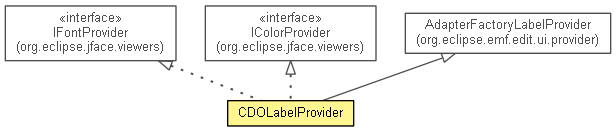

org.eclipse.emf.cdo.ui
Class CDOLabelProvider
java.lang.Object
 org.eclipse.emf.edit.ui.provider.AdapterFactoryLabelProvider
org.eclipse.emf.cdo.ui.CDOLabelProvider
org.eclipse.emf.edit.ui.provider.AdapterFactoryLabelProvider
org.eclipse.emf.cdo.ui.CDOLabelProvider
- All Implemented Interfaces:
- INotifyChangedListener, IBaseLabelProvider, IColorProvider, IFontProvider, ILabelProvider, ITableLabelProvider
- public class CDOLabelProvider
- extends AdapterFactoryLabelProvider
- implements IColorProvider, IFontProvider

A AdapterFactoryLabelProvider specialization
that decorates objects with a color/font code according to their current
state.
- See Also:
IColorProvider,
IFontProvider,
CDOObject,
CDOState
| Methods inherited from class org.eclipse.emf.edit.ui.provider.AdapterFactoryLabelProvider |
addListener, fireLabelProviderChanged, getAdapterFactory, getBackground, getColorFromObject, getColumnImage, getColumnText, getDefaultBackground, getDefaultFont, getDefaultForeground, getDefaultImage, getFont, getFontFromObject, getForeground, getImage, getImageFromObject, getText, isFireLabelUpdateNotifications, isLabelProperty, removeListener, setAdapterFactory, setDefaultBackground, setDefaultFont, setDefaultForeground, setFireLabelUpdateNotifications |
| Methods inherited from class java.lang.Object |
clone, equals, finalize, getClass, hashCode, notify, notifyAll, toString, wait, wait, wait |
CDOLabelProvider
public CDOLabelProvider(AdapterFactory adapterFactory,
CDOView view,
TreeViewer viewer)
- Since:
- 2.0
getView
public CDOView getView()
- Since:
- 2.0
getViewer
public TreeViewer getViewer()
dispose
public void dispose()
- Specified by:
dispose in interface IBaseLabelProvider- Overrides:
dispose in class AdapterFactoryLabelProvider
notifyChanged
public void notifyChanged(Notification notification)
- Specified by:
notifyChanged in interface INotifyChangedListener- Overrides:
notifyChanged in class AdapterFactoryLabelProvider
getBackground
public Color getBackground(Object object)
- Specified by:
getBackground in interface IColorProvider- Overrides:
getBackground in class AdapterFactoryLabelProvider
getForeground
public Color getForeground(Object object)
- Specified by:
getForeground in interface IColorProvider- Overrides:
getForeground in class AdapterFactoryLabelProvider
getFont
public Font getFont(Object object)
- Specified by:
getFont in interface IFontProvider- Overrides:
getFont in class AdapterFactoryLabelProvider
Copyright (c) 2011, 2012 Eike Stepper (Berlin, Germany) and others.